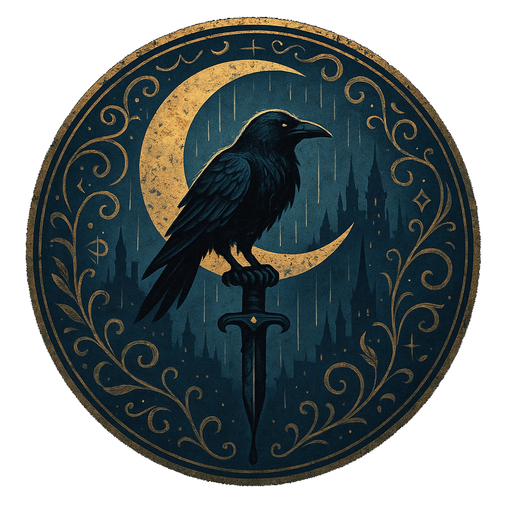

Welcome
The old charter still proclaims it as Kolnmark, Seat of the Ninth Mark. Yet you’ll only find that name in dusty tomes or spoken amongst city functionaries. Coinmarch is the name now sung by profiteers counting their excess, muttered bitterly by widows and mothers who know its true cost, and roared proudly by mercenaries eager for coin in hand and blood under boot. A city built upon the river’s edge, each stone laid by profit and sorrow; every street paved with ambition and regret, trod by those likely to surrender their lives far away from home.
In Coinmarch, great Houses rule from gilded towers, their power shrewdly gained and tempered in blood. Each House sponsors academies that churn out mercenaries famed across the land. The youth here are bred with iron resolve, taught that their worth is weighed in silver and measured by their skill at arms. Crime, strangely, is scarce, not because virtue is abundant, but because poverty and desperation are the grease that keeps the war machine of Coinmarch running smoothly.
But beneath the veneer of order simmers The Middens: a sprawling, chaotic underworld of loosely aligned gangs that haunt the expansive ruins beneath the city's bustling streets. Thieves, brigands, and misfits who have slipped between society’s cracks find shelter here. You are among these shadows, neither loyal soldier nor compliant citizen. Cast-offs and renegades, you’ve chosen, or been forced, to walk an altogether different path.
Coinmarch doesn’t care who built it or what it was meant to be—only what you're worth, and how far you're willing to go to prove it.
Welcome home.
